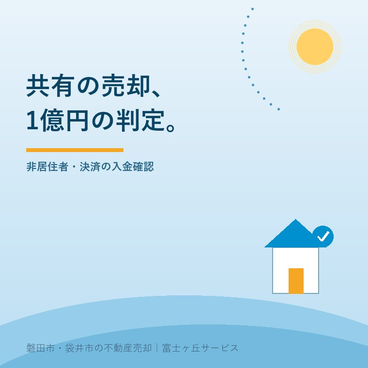

非居住者の共有不動産、源泉徴収の1億円判定
2026年10月2日｜カテゴリ：売却費用・税

この記事の要点
実家は1億5,000万円。でも共有の自分の取り分は7,500万円。源泉徴収される？
1億円判定は、買主の支払額ではなく売主側の譲渡対価で確認します。個人の買主が自己・親族の居住用に買う条件も必要です。共有者別の対価と利用目的を税理士等へ示します。磐田市・袋井市・森町では、介護施設の運営から不動産事業を始めた富士ヶ丘サービスのような地域密着の会社に相談する選択肢があります。
大石浩之（磐田市／不動産業）です。海外在住のきょうだいと実家を共有している場合、売買価格が決まっても、決済日に各人の口座へ入る額は別に確認します。源泉徴収が必要なら、代金の一部が税として差し引かれるためです。
本記事は2026年10月2日確認の国税庁の説明と共有の質疑事例を基に、1億円判定を整理します。非居住者とは税務上の区分です。海外に住所がある、日本国籍であるといった一つの情報だけで、家族の区分をこの記事から判定しません。
源泉徴収は、利益ではなく支払対価から見る
国税庁No.2879は、非居住者等へ国内不動産の譲渡対価を支払う場合、原則10.21％の源泉徴収を説明しています。源泉徴収は、代金を支払う側が税額を差し引いて納める仕組みです。売主が売却益だけに10.21％を掛ける話ではありません。
同ページは2026年4月1日現在の法令等に基づく説明です。対象の「土地等」には土地だけでなく建物等も含まれます。個人の買主でも原則の対象となり、不動産会社や法人だけが源泉徴収をする仕組みとはされていません。
例外は、個人が自己または親族の居住用に購入し、譲渡対価が1億円以下の場合です。1億円以下という金額と、買主が個人で居住目的という条件を一組で見ます。買主が賃貸運用をする物件や法人の購入について、価格だけでこの例外を当てはめません。
私は、例外の条件と税率を国税庁が同じページで示している点を評価します。買主側にも確認が必要な取引だと気付けるためです。売主が海外にいるから全額をそのまま海外送金する、と先に決めない入口になります。
その上で、仲介の説明が「海外の売主なので10.21％」の一言で止まるなら、私は足りないと考えます。例外を確認したか、売主別の対価はいくらか、誰が納付するかを決済資料に落とす必要があります。率を知っているだけでは、入金の約束ができません。
同じ1億5,000万円でも、共有する側で変わる
国税庁「土地等が共有されている場合の取扱い」は、総額1億5,000万円でも、売主共有と買主共有で異なる回答を示します。非居住者の単独売主から、居住用の買主2人が各2分の1を取得する例では、両買主に源泉徴収が必要です。
反対に、非居住者の売主2人が各2分の1を所有し、個人の買主が居住用に単独取得する例では、源泉徴収不要としています。買主の支払額が7,500万円ずつならよいという判定ではありません。1億円超かどうかは、売主側の譲渡対価で判定する説明です。
| 国税庁の事例 | 売主と買主 | 回答 |
|---|---|---|
| 総額1億5,000万円・買主共有 | 非居住者売主1人／居住用の買主2人が各2分の1 | 両買主に源泉徴収が必要 |
| 総額1億5,000万円・売主共有 | 非居住者売主2人が各2分の1／個人の買主1人が居住用 | 源泉徴収不要 |
意外なのは、物件総額が1億円を超えたら必ず必要、という読み方でもないことです。二つの例は、どちらも総額1億5,000万円です。共有者数だけでなく、誰が持分を売り、その人の譲渡対価はいくらかを見るため、結論が変わります。
質疑事例の法令基準日は2025年8月1日です。この共有の判定を2026年の新制度として紹介することはしません。国税庁も、照会の事実関係を前提とする一般的な回答で、個別取引では課税関係が異なる場合があると注記しています。
持分は、不動産の権利をどの割合で持つかを示します。家族内で「半分ずつのつもり」でも、まず登記と契約上の内容をそろえます。共有者の合意の準備には、共有名義の実家を売るときの確認記事もつながります。権利や税務の個別判断は専門家に確認を。
10.21％を、決済日の入金へ換算する
10.21％の源泉徴収が必要な対価7,500万円を仮定すると、差し引く額は765万7,500円です。計算は7,500万円×0.1021。対価から源泉徴収だけを差し引いた額は6,734万2,500円です。仲介手数料などを引く前の額で、最終手取りではありません。
これは国税庁の売主共有の例を必要と読み替える計算ではありません。個人の居住用購入という例外を満たさず、源泉徴収が必要と確認された別の仮定です。同じ7,500万円でも、条件を変えれば入金の扱いが変わることを金額で示しています。
| 仮定の計算項目 | 金額 | 意味 |
|---|---|---|
| 売主1人の対象対価 | 7,500万円 | 源泉徴収が必要と確認済みの仮定 |
| 源泉徴収額 | 765万7,500円 | 7,500万円×10.21％ |
| 差引後の額 | 6,734万2,500円 | 他の費用・精算前 |
私はこう考えます。売買価格だけを見て、手取りを約束しない。共有者ごとの入金まで割って見る。売主に届く額と、買主が税として納める額を分ければ、家族間の代金配分の話も具体的になります。価格交渉でまとまった数字を、そのまま全員の口座残高に足してはいけません。
私も、源泉徴収を費用表のどこに置くと誤解が減るかには迷いがあります。仲介手数料と同列に置くと、それで税の処理がすべて終わる印象になりかねません。私は「今回の支払いから差し引く税額」として別欄にし、その後の申告等は税理士と確認する形を提案します。
購入時の費用や売却の利益を調べることと、この支払対価からの源泉徴収は区別します。個別の申告義務、納税管理人等の対応、税額の精算は家族の事情で変わります。売却益の計算だけを持って決済を組まず、税理士などの専門家に確認を。
磐田・袋井の決済は、売主別の入金で組む
磐田市・袋井市にある実家を海外在住の共有者と売る場合、契約前から売主別の対価と受取方法をそろえます。国内の実家の所在地と、売主の税務上の居住者区分は別の確認事項です。地域独自の1億円基準があるという話ではありません。
私なら、共有者の名前、持分、税務区分の確認先、対価、源泉徴収額、費用等の精算、振込先を一行ずつ並べます。分からない欄は空白のまま専門家へ渡します。家族の代表者の一つの口座へ入れれば整理が済む、と先に決める方法は取りません。
買主には、個人か法人か、自己・親族の居住用かを確認し、判断材料を専門家と共有します。どの書面に記録するかは取引の内容に合わせて相談します。担当者の口頭の了解だけで例外の適用を確定しないことが、買主と売主双方の段取りになります。
決済の金銭の流れは、決済当日の支払いと受取りを整理した記事を参照できます。海外送金なら、送金に必要な資料と日程も受取金融機関へ確かめます。個別の所要日数や送金手数料をこの記事で約束することはできません。
仲介手数料にかかる消費税の扱いは、非居住者の仲介手数料と2026年10月の変更で扱っています。仲介サービスの消費税と、売買対価の源泉徴収は違う税の話です。一つの「税金」の欄へまとめないようにします。
2027年の税目と、今日の資料を分けて確認
国税庁No.2879は、2027年分以後の税目を所得税、防衛特別所得税、復興特別所得税と記載しています。2026年10月2日に確認した同ページの率は10.21％です。税目の名前が増えることと、率が上がることは同じではありません。
2027年の支払いを予定している場合は、支払時期とその時点の法令を専門家に再確認します。家族が今日できることは、共有者別の対価と買主の利用目的を整理することです。根拠となる資料をそろえる前に、源泉徴収の有無を約束しません。
- 登記と契約で共有者別の対価をそろえる。
- 非居住者区分と買主の購入目的を確認する。
- 源泉徴収の要否・税額・納付担当を専門家へ照会する。
- 各人の入金予定と費用精算を決済資料へ分けて記す。
富士ヶ丘サービスは、介護と不動産を一体で相談する窓口として、磐田・袋井の家族の資料整理を支えます。家族が困らない売却のため、私は総額より先に各人の受取りを確認します。税務の個別判断は税理士などの専門家に確認を。
よくある質問
請求や準備で迷う点を整理します。
- 買主が2人で、各自の支払額が1億円以下なら不要ですか？
- 買主側の支払額を分けるだけでは、源泉徴収が不要とは判断できません。国税庁は非居住者の単独売主が1億5,000万円で売り、居住用の買主2人が各2分の1を取得する事例で、両買主に源泉徴収が必要と回答しています。1億円判定は売主側の譲渡対価で行うため、共有の組み方と契約内容を専門家に確認を。
- 売主が2人で各7,500万円なら、必ず不要ですか？
- 金額だけで必ず不要とはいえません。国税庁の不要とする例は、非居住者2人が各2分の1を所有し、個人の買主が居住用に単独取得する場合です。買主が法人である場合や、自己・親族の居住用ではない場合は、同じ金額でもこの例外をそのまま使えません。売主別の対価と買主の利用目的をそろえ、税理士などの専門家に確認を。
- 2027年から10.21％に税率が上乗せされますか？
- 2026年10月2日に確認した国税庁No.2879の税率は10.21％です。同ページは2027年分以後の税目に防衛特別所得税を加えていますが、税目構成の変更だけで率の上昇とは読めません。決済日や支払時期、適用される法令を区別して再確認します。個別取引の源泉徴収税額や申告については税理士などの専門家に確認を。

この記事を書いた人：大石浩之（磐田市／不動産業・宅地建物取引士）
富士ヶ丘サービス株式会社。介護施設の運営から不動産事業を始め、磐田市・袋井市・森町で、介護と相続、実家の売却を一体で相談できる窓口を設けています。家族が困らない売却のため、資料と現地の条件を一件ずつ整理します。著者プロフィール
参考にした公式情報
2026年10月2日確認。
本記事は2026年10月2日時点の公開情報と筆者の意見です。制度・数値・手続き・契約条件は変更されることがあります。税務・登記・相続・重要事項説明・契約などの個別判断は、税理士・司法書士・弁護士などの専門家に確認を。